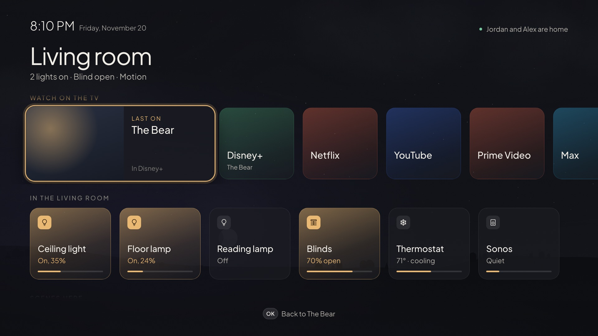

OK on Netflix opens it on the Apple TV, and the TV switches over. That part works on the living room TV.
The way back was Home on the Apple TV's remote. Tried on 20 November: the Apple TV doesn't say when Home is pressed, so the hub never knows.
So today it's the TV's Input button, and nothing on the screen says so before the hub disappears.